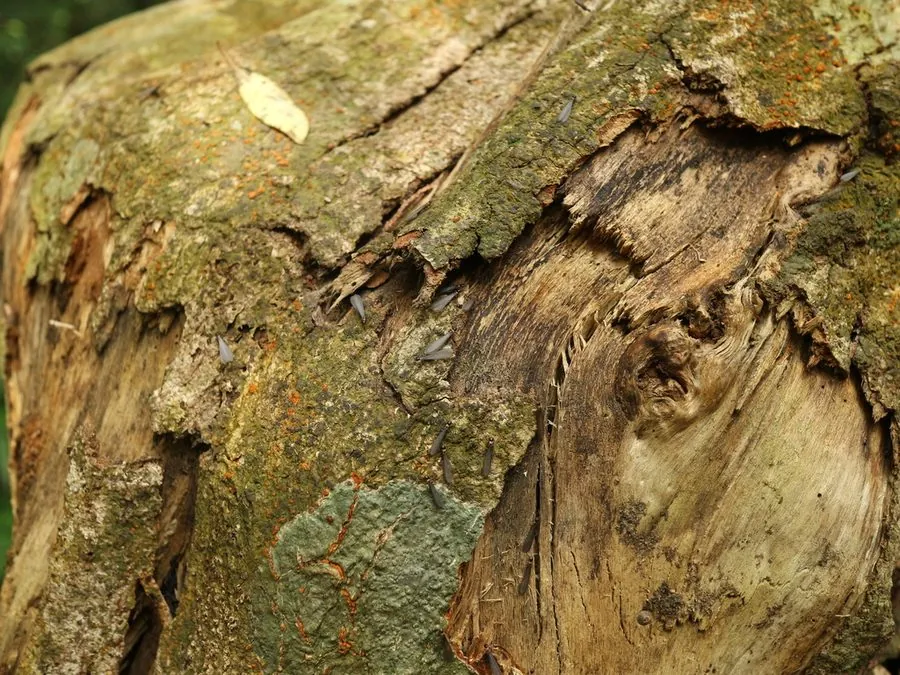

昆虫 · 动物界
散白蚁 Reticulitermes flaviceps

中国常见的土栖白蚁，群体没有固定大巢，分散在木头和土壤中取食，是房屋和园林树木的重要害虫。
- 分类
- 门节肢动物门纲昆虫纲目蜚蠊目科鼻白蚁科属散白蚁属
- 栖息环境
- 房屋木结构、园林树木、潮湿土壤和墙缝
- 地理分布
- 中国大部分地区，尤以南方常见
- 保护级别
- 暂无评估；房屋和园林重要害虫
物种志
散白蚁有翅繁殖蚁体长约 1 cm，体黄褐至黑褐色，四翅淡褐色、等长；工蚁体白色，头部圆形；兵蚁头部淡黄色，上颚细长。与家白蚁不同，散白蚁的群体没有明显的大巢，而是分散在木材、土壤和墙缝中活动。
它生活在房屋、园林、树木和潮湿的木质结构中，取食木材和植物纤维，蛀道细密，可破坏地板、门框、木梁和活树根部。散白蚁在中国大部分地区都有分布，是南方房屋白蚁防治的主要对象之一，危害隐蔽，常在发现时已经造成明显损失。防治以定期检查、保持干燥、药物屏障和诱杀饵剂为主，房屋装修前可进行白蚁预防处理，发现蚁路和蛀孔要及时请专业人员处理。
形态与习性
- 食性取食木材、植物纤维和腐木
- 体长有翅繁殖蚁约 1 cm
- 识别群体分散，无明显大巢，兵蚁头部淡黄色
- 危害破坏地板、门框、木梁和活树根部
- 防治定期检查、保持干燥、药物屏障和诱杀饵剂
趣味知识
- 散白蚁没有明显的大巢，群体分散在木头和土壤里。
- 它危害隐蔽，常在房屋木结构损坏后才被发现。
- 保持室内干燥，是预防散白蚁危害的重要方法。